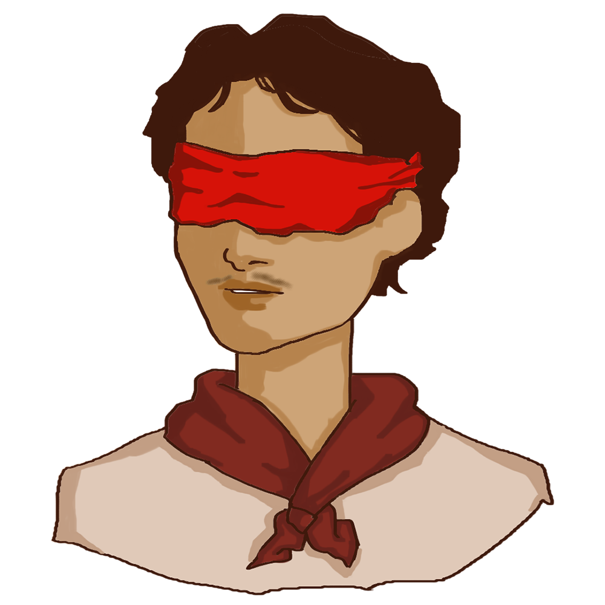

Jo Who?

Mabuhay! I'm John "Jo" Michael C. Daria, a proud CamNorteño, and a current first-year BSCS student at Bicol University. I adore the relationship between math and technology; it made me curious enough that it led me to take Computer Science—not Engineering though. I expect myself to build a strong foundation at least within 1-2 years—hoping to also participate in hackathons.
About Jo
Aside from being a computer science student, I am also a creative. I do photography, cinematography, graphic design, and video editing.
Jo Unlocked
One website I enjoy visiting is Behance because it is a platform where I can explore and appreciate the creative works of artists and designers from around the world. It inspires me to improve my own skills and stay updated with the latest trends in design and visual arts.
Some of my works
Career
Computer Science was the only program I put in my college application for Bicol University. With zero experience in coding but the eagerness to learn programming, I decided to pursue this field. I believe that this would allow me to satisfy my curiosity and further develop my skills in technology.
Jo's Fantasy
I see myself as a full-stack developer while also being a creative on the side. I hope to balance work and my passion for creative endeavors, allowing me to express myself through both technology and art.
Jo's Class Schedule
| Subject | Day | Time |
|---|---|---|
| CS 101: Introduction to Computing | Monday | 9:00 AM - 12:00 PM |
| CS 102: Computer Programming 1 | Monday, Wednesday | 1:00 PM - 4:00 PM |
| Tuesday | 01:00 PM - 03:00 PM | |
| MATH 101: Mathematical Analysis | Tuesday, Thursday | 09:00 AM - 10:30 AM |
| Friday | 10:00 AM - 12:00 PM | |
| Phys 1: Physics for Computing | Tuesday, Thursday | 10:30 AM - 12:00 PM |
| PATHfit 1: Movement Competency Training | Wednesday | 07:00 AM - 09:00 AM |
| GEC11: Understanding the Self | Friday | 05:00 AM - 08:00 AM |
| NSTP 11: CWTS | Saturday | 10:00 AM - 01:00 PM |
Clarity
Graphic design was already challenging enough, but web design was harder.
Although I have a strong foundation in design fundamentals and background in web design, it was not that easy to translate creative ideas into code. But looking back, I am proud to have greatly improved this output as compared to the old one.
This made me realize that with patience and persistence, something challenging would eventually become simpler as I progress.